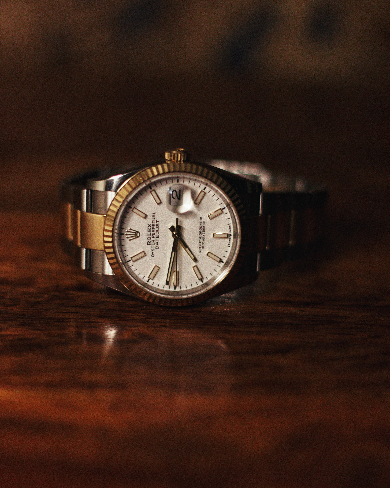

Now this is a classic watch. There simply is not a better watch
to say to the world that yuo've made it. That being said, it's
got a much more practical history than people are aware of. The
fluted bezel, although pretty and appearing to be decorative,
actually acts as a very small saw, you can see it's ridged. If
you are kidnapped its the perfect way to cut through rope used
to tie your wrists. Or maybe there's been high winds and some of
the trees in your garden are looking a bit precarious, don't be
scared of damaging the soft, gold metal of the bezel, just go
for it and cut through those tree trunks. You'll be through them
in no time.
 Ask anyone who wears this type of watch bracelet, they are so
good at pulling hairs out of your arms. That's because they are
actually based on a design for a hair removal tool that was
created by the ancient greeks. So next time you're about to pay
for a wax or hair removal, dont! Just get your Rolex out and rub
it all over yourself, you'll be hairless in minutes and,
honestly, it doesn't hurt at all!
Ask anyone who wears this type of watch bracelet, they are so
good at pulling hairs out of your arms. That's because they are
actually based on a design for a hair removal tool that was
created by the ancient greeks. So next time you're about to pay
for a wax or hair removal, dont! Just get your Rolex out and rub
it all over yourself, you'll be hairless in minutes and,
honestly, it doesn't hurt at all!
 If you can find someone who paid retail for one of these then
hang out with that person as they obviously are blessed and have
some kind of magical power. Wait. Maybe it's these people who
are making all those shoes float on the shoe page? I'll bet
that's it isn't it! It's not Harry Potter after all, it's
Philippe Patek, or Patek Philippe or whatever the hell his name
is!
If you can find someone who paid retail for one of these then
hang out with that person as they obviously are blessed and have
some kind of magical power. Wait. Maybe it's these people who
are making all those shoes float on the shoe page? I'll bet
that's it isn't it! It's not Harry Potter after all, it's
Philippe Patek, or Patek Philippe or whatever the hell his name
is!